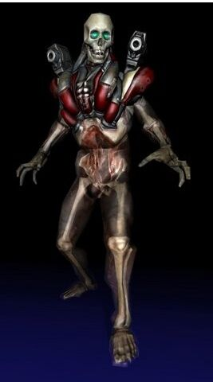
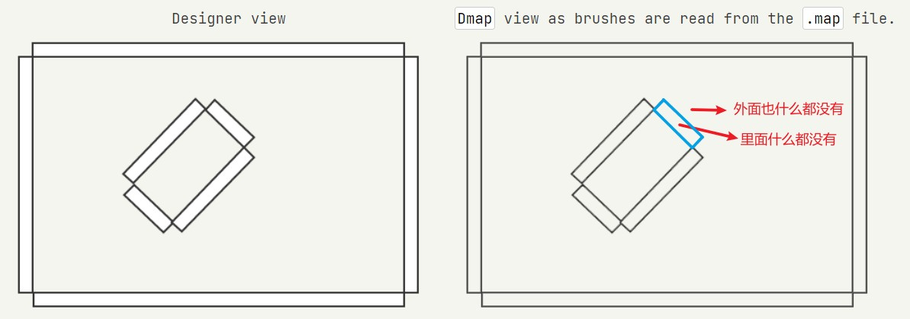
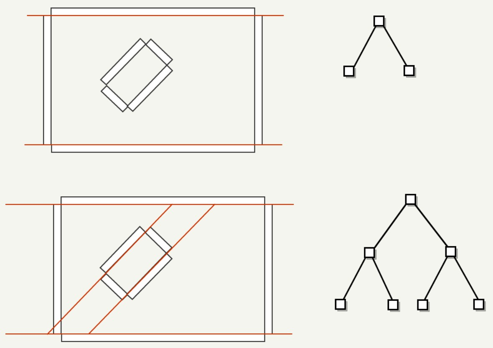
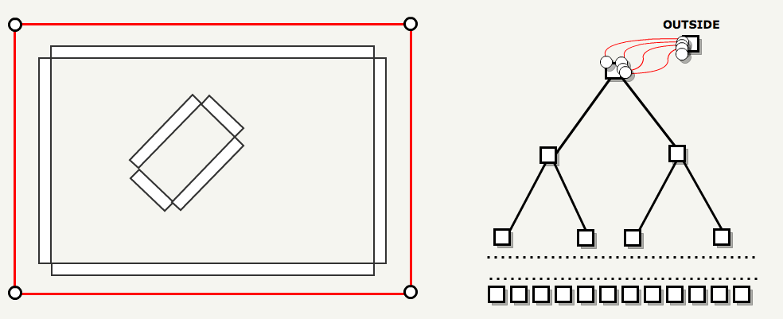

Doom3 Engine
Table of Contents
Doom3 Engine note.
<!– more –>
Doom3
Introduction
Architecture
Solution structure 如下:
| Projects | Builds | Observations | |
| Windows | MacO SX | ||
| Game | gamex86.dll | gamex86.so | Doom3 gameplay |
| Game-d3xp | gamex86.dll | gamex86.so | Doom3 eXPension(Ressurecton) gameplay |
| Doom3 | Doom3.exe | Doom3.app | Doom 3 Engine |
| MayaImport | MayaImport.dll | 部分资源创作工具链：在运行时加载该 dll，为了打开 Maya 文件并导入 monsters, camera 路径以及地图 | |
| TypeInfo | TypeInfo.exe | 内部的运行时类型识别（RTTI）helper: 生成 GameTypeInfo.h, 其为 Doom3 中所有类型和每个成员内存大小的字典。通过 TypeInfo 类可以进行内存调试 | |
| CurlLib | CurlLib.lib | HTTP 客户端，用于下载文件。静态连接到 gamex86.dll 和 doom3.exe | |
| idLib | idLib.lib | idLib.a | id software 库。包含 parser,lexer,dictionary 等。静态连接到 gamex86.dll 和 doom3.exe |
架构图如下：

当 Doom3.exe 启动以后，其会执行如下三个操作：
- 通过 LoadLibrary 加载 gamex86.dll 到其进程的内存空间中
- 使用 win32 API GetProcAddress 来获得 dll 中 GetGameAPI 的地址
- 调用 GetGameAPI，将 Doom3 中的 system 注册到 game.dll 中，并将 game 、gameEdit 对象通过 gameExport_t 返回给 Doom3
// GetGameAPI 的实现在game.dll Game_local.cpp 文件中 extern "C" gameExport_t *GetGameAPI( gameImport_t *import ) { if ( import->version == GAME_API_VERSION ) { // set interface pointers used by the game sys = import->sys; common = import->common; cmdSystem = import->cmdSystem; cvarSystem = import->cvarSystem; fileSystem = import->fileSystem; networkSystem = import->networkSystem; renderSystem = import->renderSystem; soundSystem = import->soundSystem; renderModelManager = import->renderModelManager; uiManager = import->uiManager; declManager = import->declManager; AASFileManager = import->AASFileManager; collisionModelManager = import->collisionModelManager; } // set interface pointers used by idLib idLib::sys = sys; idLib::common = common; idLib::cvarSystem = cvarSystem; idLib::fileSystem = fileSystem; // setup export interface gameExport.version = GAME_API_VERSION; gameExport.game = game; gameExport.gameEdit = gameEdit; return &gameExport; }
最后，Doom3.exe 会有一个指向 idGame 对象的指针，game.dll 会有一个指向 gameImport_t 对象的指针，gameImport_t 对象中包含了所有缺失的子系统的引用(如：idFileSystem)
gamex86 中所看到的 Doom3.exe 为：
typedef struct { int version; // API version idSys * sys; // non-portable system services idCommon * common; // common idCmdSystem * cmdSystem // console command system idCVarSystem * cvarSystem; // console variable system idFileSystem * fileSystem; // file system idNetworkSystem * networkSystem; // network system idRenderSystem * renderSystem; // render system idSoundSystem * soundSystem; // sound system idRenderModelManager * renderModelManager; // render model manager idUserInterfaceManager * uiManager; // user interface manager idDeclManager * declManager; // declaration manager idAASFileManager * AASFileManager; // AAS file manager idCollisionModelManager * collisionModelManager; // collision model manager } gameImport_t;
Doom3 中所看到的 gamex86 为：
typedef struct { int version; // API version idGame * game; // interface to run the game idGameEdit * gameEdit; // interface for in-game editing } gameExport_t;
Main Loop
下面是展开的主循环代码, 其中只包含了引擎相关的重要的部分：
// 下面代码在 Doom.exe win_main.cpp 文件中 idCommonLocal commonLocal; // OS Specialized object idCommon * common = &commonLocal; // Interface pointer (since Init is OS dependent it is an abstract method int WINAPI WinMain( HINSTANCE hInstance, HINSTANCE hPrevInstance, LPSTR lpCmdLine, int nCmdShow ) { Sys_SetPhysicalWorkMemory( 192 << 20, 1024 << 20 ); //Min = 201,326,592 Max = 1,073,741,824 Sys_CreateConsole(); // Since the engine is multi-threaded mutexes are initialized here: One mutex per "critical" (concurrent execution) section of code. for (int i = 0; i < MAX_CRITICAL_SECTIONS; i++ ) { InitializeCriticalSection( &win32.criticalSections[i] ); } common->Init( 0, NULL, lpCmdLine ); // Assess how much VRAM is available (not done via OpenGL but OS call) Sys_StartAsyncThread(){ // The next look runs is a separate thread. while ( 1 ){ usleep( 16666 ); // Run at 60Hz common->Async(); // Do the job Sys_TriggerEvent( TRIGGER_EVENT_ONE ); // Unlock other thread waiting for inputs pthread_testcancel(); // Check if we have been cancelled by the main thread (on shutdown). } } Sys_ShowConsole(1, true); // Show or hide the console while( 1 ) { Win_Frame(); common->Frame(){ session->Frame() // Game logic { for (int i = 0 ; i < gameTicsToRun ; i++ ) RunGameTic(){ game->RunFrame( &cmd ); // From this point execution jumps in the GameX86.dll address space. for( ent = activeEntities.Next(); ent != NULL; ent = ent->activeNode.Next() ) ent->GetPhysics()->UpdateTime( time ); // let entities think } } session->UpdateScreen( false ); // normal, in-sequence screen update { renderSystem->BeginFrame(); { idGame::Draw(); // Renderer front-end. Doesn't actually communicate with the GPU !! } renderSystem->EndFrame(); { R_IssueRenderCommands(); // Renderer back-end. Issue GPU optimized commands to the GPU. } } } } }
完整的主循环展开如下：
doom3_unrolled.txt
从 Sys_StartAsyncThread 函数可以看出，Doom3 是基于多线程的。该线程的目的是为了处理时间敏感的函数，为了不让这些函数的调用频率受到帧率限制。
冷知识：
idTech4 高层对象都属于包含虚函数的抽象类。这通常会影响性能，因为每个虚函数调用都会导致虚函数表的查询。如下面代码所示，所有对象都进行静态实例化，可以避免这样的性能消耗。因为对象是静态分配到数据段的，其类型是已知的，编译器可以将虚表查询优化掉。
idCommonLocal commonLocal; // Implementation idCommon * common = &commonLocal; // Pointer for gamex86.dll
但是，在 handshake 阶段会使用接口指针，doom3.exe 可以和 gamex86.dll 交换对象引用, 此时虚表查询的消耗是无法被优化掉。
- 很多代码从 idTech1 开始就一直没有变过。如用于获取鼠标和摇杆输入的函数依然叫 IN_frame(). （IN 表示 input）
Doom3 sdk documents
IDLib
idLib 是一个通用的代码库。其包含了字符串代码、解析器、几个哈希表、数学库、计时器、容器等。它也是存储所有 SSE 代码的地方，如果你对此感兴趣，可以查看名称为 idLib/Math/Simd_*.* 的文件。
Game System
游戏代码中有很多部分与 Doom 3 没有任何关系，而是构建游戏代码的基础部分。
GameSys
GameSys 是游戏代码的核心。 其包含基本的 idClass 类，以及事件系统和保存游戏系统。 GameSys 非常的抽象，对建立在它之上的实际游戏一无所知。 它所知道的只是创建对象、触发事件并遍历对象以进行保存和恢复。
当你在 entitydef 中指定 spawnclass 时，他会调用 idClass::CreateInstance 来创建该 spawn 类的实例。 使用 Class.h 中定义的 CLASS_DECLARATION 宏可以用 idClass 来注册一个类。
AI
AI 文件夹实际上并不包含怪物的 AI（它们在脚本中定义）。相反，C++ AI 代码是将脚本与游戏其余部分联系起来的“粘合剂”。它包含利用 AAS（Area Awareness System 区域感知系统）进行路由和寻路，以及事件处理。核心对象是 idAI，它派生自 idActor->idAFEntity_Gibbable->idAFEntity_Base->idAnimatedEntity->idEntity->idClass。
Tips:
- AF 是关节体型的缩写(articulated figure)
- Gibbable 表示可破碎，Gibbable Bodies 可破碎尸体 https://www.youtube.com/watch?v=hjrv2sPI020
在 Doom 3 中，路由是“我如何从地图的一个区域到达另一个区域”，而寻路是“我如何绕过那把椅子”。差异是微妙的但很重要。
AI 是与正在制作的实际游戏最密切相关的游戏系统。一个示例是 idAI_Vagary，其中包含 Vagary 用于拾取和向玩家投掷物体的特殊代码。
AI_events.cpp 包含处理 AI 脚本中事件的所有代码。大多数函数只是调用 AI.cpp 中的实现。一个例子是 Event_KickObstacles，它只是修正了参数并调用 AI.cpp 中的 KickObstacles()。
Physics
Doom 3 游戏代码随整个 Doom 3 物理系统一起提供。核心引擎本身绝对没有物理代码。甚至 LCP 求解器也在 idLib 中。物理代码非常庞大，但幸运的是，您不必拥有物理学博士学位即可了解其中大部分内容以及如何使用它。
idPhysics 对象是一种操纵实体位置和方向的工具。物理对象是用于碰撞检测的 idClipModels 的容器。物理系统根据物理定律或其他规则处理这些碰撞模型在世界中的移动。
每个 idEntity 都有一个指向 idPhysics 对象的指针，可以使用 idForces 移动该对象，尽管还有其他方法可以移动它。 idEntity 每一帧都会根据物理系统中的原点和轴信息更新自己的视觉模型。
渲染系统有每个实体的视觉模型，物理系统有每个实体的裁剪模型（有时称为战斗模型）。碰撞模型可以从地图模型加载（使用标记为 clip 的任何 surfaces），也可以从渲染模型生成（默认情况下它使用渲染模型中的所有表面，但可以使用“ textures/common/collision”材质，在这种情况下，它使用简化模型代替），或者也可以从 .cm 文件加载（使用 DOOMEdit 创建）。
idPhysics 有多个子类，它们都实现了专门的物理类型。例如，门使用 idPhysics_Parametric，布娃娃使用 idPhysics_AF 等。大多数物理类型都是不言自明的，所有这些类型的 .h 文件顶部都有简要说明。
如果不希望在对象上运行物理，请确保清除 TH_PHYSICS 标志（例如，当对象停止时）。如果不希望对象被触摸，则应取消链接剪辑模型（而不仅仅是将内容掩码设置为 0）。这样做可以加速碰撞检测，因为它甚至不会访问该剪辑模型。你应该确保没有小的抖动，其可能会导致物理会在一个物体上不断运行。有一些控制台命令可以帮助调试物理减速。最有用的可能是 g_showActiveEntities。
Anim
动画系统不决定播放哪些动画（在脚本中完成），而是负责混合动画、帧之间的 lerping、混合骨骼权重和调用帧命令。
在 Doom 3 中，有 4 个不同的动画通道（“躯干”、“腿”、“头”、“眼睑”）以及第五个伪通道（“全部”）。不同的动画可以同时在每个动画通道上播放。这避免了 quake 2 的“射击时跑”问题，以及 quake 3 的“模型成为碎片”问题。只有一个网格，但每个动画都会影响一组不同的骨骼。所有这些都在 Anim_Blend 中处理。它还处理两个完全不同的动画之间的混合（例如，当你在武器之间切换时）。
帧命令（在 modelDef 中定义）是在 ServiceAnims 中被调用的。每次更新动画时，它都会查看是否通过了定义帧命令的“边界”。添加自己的帧命令实际上也非常容易。你只需将一个项目添加到 frameCommandType_t 枚举类型中，然后在 AddFrameCommand 和 CallFrameCommands 中为它实现对应逻辑即可。
Script
与 Anim 类似，Script 子系统非常通用，对具体游戏完全不可知。脚本系统的 main 入口点在 idProgram。系统中只有一个 idProgram（它是 idGameLocal 的成员）。它扫描脚本目录并编译其中包含的所有脚本。它持有了所有函数和变量信息。idProgram 是唯一使用 idCompiler 的类。 idCompiler 是操作码生成器。它使用了 idLib 中定义的词法分析器和解析器。
要实际调用脚本函数，需要创建一个新的 idThread（应该用 new 分配，而不是在堆栈上创建）。 idThread 中有一些静态函数来处理当前活动线程的跟踪。每个线程都有一个 idInterpreter，其中包含一个线程的所有堆栈信息和指令指针。这些游戏线程不是实际的操作系统线程。这种方式使得脚本系统为每个线程在每一帧都提供了运行机会。线程会一直运行，直到它获得一个多帧事件或遇到一个暂停事件，例如 sys.pause、sys.waitFor 或 sys.wait（还有一个对 ai 对象的等待命令）。
Game Utility Files
Network
原始网络代码仍在引擎内部，但 Doom 3 暴露了许多以前的 id 引擎没有的网络部分。 在 Doom 3 中，你可以自定义位消息，以包含你想要的任何内容，这些消息可以通过网络发送到你想要的任何客户端。 这显然是一个非常强大的工具。 大部分代码在 Game_network.cpp 中，但网络代码分布在几乎所有游戏文件中。 两个最重要的函数是 WriteToSnapshot 和 ReadFromSnapshot。 这两个函数处理实体的定期更新。 所有客户端实际上都在运行与服务器完全相同的游戏代码，因此理论上它们永远不会不同步，但众所周知，它们确实会不同步。 快照机制将定期将客户端快照恢复到服务器同步。 还有其他发送更新的方法，例如客户端事件和可靠消息，很容易就可以确定你是否需要使用它们。
Game/GameLocal
idGame 是整个 game.dll 的接口类。 这是核心引擎唯一看到的东西。 引擎加载 game.dll 时做的第一件事是调用 GetGameAPI，将接口指针传递给一堆内部系统类。 该函数将系统类指针复制到 dll 中的全局指针，然后返回一个指向 idGameLocal 对象（被强制转换为 idGame）的指针。 idGameLocal 是 game 接口的实际实现。 由于 gameLocal 是 game.dll 中的全局对象，因此许多真正随机的函数最终被扔在那里。 真正重要的函数也在 idGame 中定义（例如 InitFromNewMap、RunFrame 和 Draw）。
MultiplayerGame 定义了所有多人特定的游戏代码，例如记分和投票。
Pvs
PVS（Potentially Visible Set 潜在可见集）跟踪从哪些区域可以看到其他哪些区域。在加载地图时计算 PVS。 它允许游戏代码确定对象或怪物是否应该进入休眠状态，网络代码也使用它来确定将哪些更新发送给哪些客户端。
AF
idAF 是一个关节体型(articulated figure)的 辅助类。它包含一个指向 animator 的指针，animator 用于对象做动画。 它不进行任何求解（全部在 idPhysics_AF 中完成），而是将求解的 AF 位置应用于实体模型（请记住，物理模型是与渲染系统完全分离的系统）。
IK
idIK 是逆运动学辅助类。 它目前只被 actors 用来保持脚在地面上，但它可以很容易地用于更多用途。 它的使用与 idAF 类似。
PlayerIcon
idPlayerIcon 是一个辅助类，用于在多人游戏中在玩家头部上方绘制延迟和聊天图标。
PlayerView
idPlayerView 是一个辅助工具，可以从玩家的角度呈现场景。 它是绘制 PDA 的地方，也是处理最后一分钟效果的地方，例如屏幕血溅、狂暴、影响和双重视觉视图，以及屏幕渐变。
SmokeParticles
烟雾粒子系统用于以完全非参数方式不断改变位置或方向的粒子效果。
GameEdit
idGameEdit 是一个实用程序类，允许编辑器（如 AFEditor）在游戏运行时操作实体。
Game Entities
现在我已经了解了游戏构建的主要系统，我可以开始讨论实际的游戏代码了。 我要讲的其余代码几乎都是从 idEntity 派生的。 如门、怪物、玩家、物品、火车、触发器、灯光等待许多其他东西。 我认为最简单的方法是逐个讨论每个文件。
Entity
idEntity 是派生所有实体的基类。 它处理所有实体共有的大多数“低级”维护功能，例如生成、思考、运行物理、绑定、播放声音、显示、隐藏等。
Entity.cpp 还包含 idAnimatedEntity，它只是一个关联了 animator（可以播放动画）的实体。
WorldSpawn
worldspawn 是一个代表整个关卡本身的实体。其负责从地图中读取一些属性来设置重力和耐力，并调用关卡脚本。
Camera
idCamera 用于目标截图（当目标工具提示弹出时），也用于过场动画摄影机。大部分代码都是处理跟随动画（在 md5camera 类中定义）。 相机也可以绑定到移动实体（因为任何实体都可以绑定到任何其他实体）。
SecurityCamera
安全摄像机用于制作平移、可破碎的安全摄像机（例如 CPU 摄像机-Computer Played Unit Camera）。 他们只是左右移动，只管自己的事。
BrittleFracture
BrittleFracture 是指任何物体在受损时会非常壮观地破碎的术语。通常用于玻璃，但从技术上讲，你可以在 BrittleFracture 对象上放置你想要的任何纹理。 brittle fracture 会将一个平面细分为许多碎片，然后跟踪碎片之间的链接，因此当两个碎片之间有足够的损坏时，链接就会断裂。单个碎片作为 idPhysics_StaticMulti 的一部分在物理系统中运行。 这使得制作破碎非常耗时。可以通过将碎片视为粒子来进行加速（这样碎片就不需要经过物理系统的处理），但这看起来不太好。
Fx
Fx 实体是一个用于特殊效果的容器对象。Fx.h 文件中还包含一个 idTeleporter, 其为传送器目标实体。
Light
idLight 实体代表了几乎所有可以用灯光完成的事情：打开和关闭、随声音颤动、淡入和淡出等。
Sound
idSound 和 idLight 一样，只适用于声音。
Item
Items 是玩家可以捡起来获得的东西。 武器，医疗包，盔甲等都是物品。 该文件定义了基本的 idItem（用于大多数事物），以及 idMoveableItem（用于盔甲，以及一些其他较大的对象）、idItemPowerup（隐身、狂暴等）、idObjective（表示一个目标）、idVideoCDItem、idPDAItem 和 idMoveablePDAItem。 它还定义了 idItemRemover 和 idObjectiveComplete，它们是从玩家物品中移除物品的实体。 物品和可移动物品之间的区别在于环境（如门）在接触物品时的反应。 对于常规物品，对象将直接穿过它，但对于可移动物品，物品将被移动器推动。
Moveable
idMoveable 就像无法拾取的可移动物品。例如，人们喜欢打孔的汉堡包、板条箱、汽水罐、垃圾桶、垃圾等。定义了两种特殊情况的可移动物品：idBarrel 和 idExplodingBarrel。
Trigger
触发器是在某事发生时触发目标实体或调用脚本的实体。“某事”取决于触发器的类型。有用于玩家触摸的触发器，还有用于怪物触摸的触发器，计时器触发器，伤害触发器，淡入淡出触发器，仅在触发一定次数后触发的触发器，仅针对某些实体触发的触发器等。 只要触发器被触发，它就会向它的任何目标实体发送一个激活事件。
Target
目标用作触发器的目标。 大约有 30 种不同的目标实体类型，它们做的事情大相径庭，所以我不打算提及它们。 幸运的是，大多数目标都相当小（只有一个 Event_Activate 函数）。
Misc
Misc 是我们放置不适合其他任何地方的实体的地方。 它包含诸如 idVacuumEntity 和 idPlayerStart 之类的东西。 它也包含大约 30 种实体，所以我也不打算讨论这些。
AFEntity
AFEntity 是具有关联的关节体型（articulated figure）的实体。 它实际上可以是许多不同类型的实体之一。 玩家、怪物、车辆、锁链（如起重机）和一般的尸体都是 AF 实体。 有一个 idAFEntity_Base 类，其中包含所有 AF 实体共享的一些基本功能，idAFEntity_Gibbable、idAFEntity_Vehicle、idAFEntity_SteamPipe 和 idAFEntity_ClawFourFingers 都派生自 idAFEntity_Base。 AFEntity 实际上除了生成和销毁 AF 实体之外并没有做太多事情，因为所有实际工作都在 idAF 和 idPhysics_AF 中完成。
idClass
+-idEntity
+-idAnimatedEntity
|-idWeapon
|-idAFAttachment
+-idAFEntity_Base ---- Uses idAF
|-idAFEntity_ClawFourFingers
|-idAFEntity_Vehicle
| |-idAFEntity_VehicleFourWheels
| +-idAFEntity_VehicleSixWheels
+-idAFEntity_Gibbable
|-idAFEntity_WithAttachedHead
|-idAFEntity_Generic
|-idAnimated
+-idActor ---- Uses idIK
|-idPlayer
+-idAI
Actor
Actor 是任何需要一一些 AI 的东西。 一般来说，Actor 有一个 .script 与之关联，但它并不总是如此（没有 script 的 actor 只是站在那里眨眼——就像在现实生活中一样）。 idActor 派生自 idAFEntity_Gibbable。
Player
idPlayer 就是玩家。其包含输入处理，物品处理，过场，动画，传送，以及一大堆其他事情（大约有 8000 行代码）。Player.cpp 中还包含 idInverntory, 其为玩家库存的一个辅助类。
Projectile
idProjectile 是一种飞过世界并对击中的任何东西造成伤害的实体。 通常，它们是由武器发射的（见下文），但并非必须如此。 例如，Revenant（亡魂）会产生炮弹，但从技术上讲，他没有任何武器（肩扛式火箭发射器是他模型的一部分，而火箭是在脚本中生成的）。

Weapon
idWeapon 是玩家在游戏中四处奔跑时拿在他面前的实体。 它可能会或可能不会发射弹丸，但大多数时候它会。 idWeapon 的有趣之处在于每个玩家一个，而不是每个武器一个。 当玩家切换武器时，它只是将一个新的武器脚本加载到现有的 idWeapon 中。
The Engine Code
System
Sys 是所有操作系统特定调用的地方。诸如锁定内存和生成线程之类的东西都在这里。所有函数和类都在 “sys”文件夹中的 sys_public.h 中定义。 游戏可访问的所有函数都是 idSys 单例的成员。
Common
idCommon 处理启动和关闭所有其他系统（包括 game system）。 它还执行错误、警告和调试消息打印（它将消息路由到日志文件、控制台、早期控制台、专用控制台或其他需要它的地方）。
在引擎中，代码如下所示：
void main(void) { Sys_Init(); common->Init(); while (1) { common->Frame(); } }
Command System
idCmdSystem 处理用户输入到任何一个控制台（游戏内控制台、专用控制台或编辑器控制台）的命令。 游戏代码也可以直接将命令传递给命令系统进行处理。 在每一帧命令系统将解析出命令缓冲区并通过调用与命令相关的回调函数来执行任何等待的命令。 例如，“quit”将调用 Com_Quit_f 回调函数（该函数又会调用 common->Quit()）。
CVar System
idCVarSystem 用于管理控制台变量。 Doom 3 中的控制台变量比以前引擎中的控制台变量要酷得多。 这些变量可以按照如下方式添加到 CVar 系统中：
idCVar com_showFPS( "com_showFPS", "0", CVAR_BOOL|CVAR_SYSTEM, "" );
idCVar 的构造函数会将 cvar 添加到 cvar 的静态列表中，然后在启动时将其添加到 cvar system 中。 之后，你可以通过实例化的对象访问该 cvar。 你还可以通过 cvar system 中的函数访问 cvar，但这有点慢（因为它必须每次都进行查找，而不是将其存储在 cvar 对象中）。
File System
idFileSystem 允许访问文件。 你请求的文件可能在真实文件系统中，也可能在 pack 文件系统中。 它也可能在 mod 目录或游戏目录中。 当您请求“cheese/gouda.jpg”时，它将搜索游戏目录，然后是游戏包文件，然后是基本目录，然后是基本包文件。 如果服务器在纯模式下运行，那么文件系统将只检查包文件。 文件系统跟踪服务器上访问的所有文件以进行纯检查，它也可以设置为复制模式（fs_copyfiles）以帮助构建。
Networking System
游戏系统实际上只能访问网络系统的两个部分，第一部分为读/写（idGame::ClientReadSnapshot / idGame::ServerWriteSnapshot）的回调函数，第二部分为发送和接收可靠消息的函数（在 idNetworkSystem 中）。 idNetworkSystem 中还有一些其他函数可以获取 ping 和丢包等统计信息。
Render System
渲染器分为 3 个不同的概念部分：
- RenderWorld 与场景图非常相似。 它包含场景中的所有渲染模型和纹理，以某种易于剔除的方式排列。 它处理剔除并将命令发送到后端。
- 后端是一个高度优化的系统，用于渲染三角形 soups。 Doom 3 支持的每个主要硬件架构（NV20、R300、ARB、ARB2、CG）都有一个单独的后端。
- 渲染系统管理所有渲染世界（可以有多个 render worlds），并作为渲染系统的入口点。
Sound System
声音系统与渲染系统非常相似，因为有一个声音世界（或两个，或三个）来处理所有真正困难的东西，而声音系统只是作为一个环形领导者。 声音世界会跟踪所有发声体的位置、它们的状态以及听者的位置。
Render Model Manager
idRenderModelManager 处理渲染模型的加载和释放。 模型可以采用多种文件格式，包括 BSP、LWO 和 ASE。 在第一次被请求模型数据时时模型管理器会缓存该模型数据。 在关卡加载期间，关卡使用的每一个模型都有模型管理器来加载（在 BeginLevelLoad 和 EndLevelLoad 调用之间）。 这将确保在实际游戏过程中最小的磁盘命中。
User Interface Manager
idUserInterfaceManager 的行为与模型管理器完全相同，只是 idUserInterfaceManager 是用于 GUI。
Declaration Manager
idDeclManager 处理加载、缓存、读取和写入任何类型的 decl。 它扫描目录并解析出 decl，自动为每种类型创建正确的 decl 对象。 你可以使用 decl 管理器注册你自定义的 decl 类型。 就像其他管理器一样，它加载的任何 decls 都应该在指定的加载阶段完成，以防止不必要的磁盘命中。
AAS file Manager
idAASFileManager 加载和释放 AAS（area awareness system 区域感知系统）文件。 这是在游戏代码中获取 idAASFile 的唯一方法。
Collision Model Manager
碰撞模型管理器与渲染模型管理器完全一样，只是其用于物理系统而不是渲染系统。
DMap
和每一代 id software engine 一样，地图是由策划组生成的，其会被一个工具预处理从而提升运行时性能。
对于 idTech4 引擎来说，处理地图的工具为 dmap。其目标是从 .map 文件中读取多面体数据，通过区域间门户(inter-area-portals)来识别区域，并将这些区域保存在 .proc 文件中。
Seth Teller 在 1992 年发表了一篇令人惊叹的论文：密集遮挡多面体环境中的可见性计算（Visibility Computations in Densely Occluded Polyhedral environment）：它使用了许多解释性图示很好地描述了 idTech4 是如何工作的。
The editor
设计师通过 CSG（构造实体几何 Constructive Solid Geometry）制作关卡地图：他们使用的多面体通常有 6 个面，通过将它们放置在地图上来制作关卡。
这些块被称为画笔，下图显示了使用的 8 个画笔（我使用如下地图来解释 dmap 中的每个步骤）。

设计师可能很清楚什么是“内部”（左侧），但 dmap 收到了一个画笔汤，里面什么都没有，外面什么都没有（右侧）。画笔不是通过面定义的，而是通过面对应的平面定义的。使用平面而不是面似乎效率很低，但稍后在检查两个面是否在同一平面上时非常有用。 因为平面朝向不是一致的，所以没有内部或外部。平面方向可以无差别地指向体积外部或内部（平面方向指向体积内部或外部都没有差别）。
Code overview
Dmap 源码注释非常清晰。
bool ProcessModel( uEntity_t *e, bool floodFill ) { bspface_t *faces; // build a bsp tree using all of the sides // of all of the structural brushes faces = MakeStructuralBspFaceList ( e->primitives ); e->tree = FaceBSP( faces ); // create portals at every leaf intersection // to allow flood filling MakeTreePortals( e->tree ); // classify the leafs as opaque or areaportal FilterBrushesIntoTree( e ); // see if the bsp is completely enclosed if ( floodFill && !dmapGlobals.noFlood ) { if ( FloodEntities( e->tree ) ) { // set the outside leafs to opaque FillOutside( e ); } else { common->Printf ( "**********************\n" ); common->Warning( "******* leaked *******" ); common->Printf ( "**********************\n" ); LeakFile( e->tree ); // bail out here. If someone really wants to // process a map that leaks, they should use // -noFlood return false; } } // get minimum convex hulls for each visible side // this must be done before creating area portals, // because the visible hull is used as the portal ClipSidesByTree( e ); // determine areas before clipping tris into the // tree, so tris will never cross area boundaries FloodAreas( e ); // we now have a BSP tree with solid and non-solid leafs marked with areas // all primitives will now be clipped into this, throwing away // fragments in the solid areas PutPrimitivesInAreas( e ); // now build shadow volumes for the lights and split // the optimize lists by the light beam trees // so there won't be unneeded overdraw in the static // case Prelight( e ); // optimizing is a superset of fixing tjunctions if ( !dmapGlobals.noOptimize ) { OptimizeEntity( e ); } else if ( !dmapGlobals.noTJunc ) { FixEntityTjunctions( e ); } // now fix t junctions across areas FixGlobalTjunctions( e ); return true; }
0. Loading the level geometry
.map 文件是一个 entities 列表。关卡是列表中的第一个 entity，其 classname 字段的值为 "worldspawn"。一个 entity 包含了一个 primitives 列表，primitives 大多数为 brushes。剩余的 entities 为 lights,monsters,player spawning location, weapons 等等。每个 brush 被表示为一组平面。brush 的边被称为面(faces)也被称为 windings，用其他平面来裁剪一个平面可以得到 brush 的面。
Version 2 // entity 0 { "classname" "worldspawn" // primitive 0 { brushDef3 { ( 0 0 -1 -272 ) ( ( 0.0078125 0 -8.5 ) ( 0 0.03125 -16 ) ) "textures/base_wall/stelabwafer1" 0 0 0 ( 0 0 1 -56 ) ( ( 0.0078125 0 -8.5 ) ( 0 0.03125 16 ) ) "textures/base_wall/stelabwafer1" 0 0 0 ( 0 -1 0 -3776) ( ( 0.0078125 0 4 ) ( 0 0.03125 0 ) ) "textures/base_wall/stelabwafer1" 0 0 0 ( -1 0 0 192 ) ( ( 0.0078125 0 8.5 ) ( 0 0.03125 0 ) ) "textures/base_wall/stelabwafer1" 0 0 0 ( 0 1 0 3712 ) ( ( 0.006944 0 4.7 ) ( 0 0.034 1.90) ) "textures/base_wall/stelabwafer1" 0 0 0 ( 1 0 0 -560 ) ( ( 0.0078125 0 -4 ) ( 0 0.03125 0 ) ) "textures/base_wall/stelabwafer1" 0 0 0 } } // primitive 1 { brushDef3 } // primitive 2 { brushDef3 } } // .... // entity 37 { "classname" "light" "name" "light_51585" "origin" "48 1972 -52" "texture" "lights/round_sin" "_color" "0.55 0.06 0.01" "light_radius" "32 32 32" "light_center" "1 3 -1" }
1. MakeStructuralBspFaceList & FaceBSP
第一步是使用 Binary Space Partition 对地图进行分割。地图中的每个非透明面都会被用作分割平面。
- 如果地图大于 5000 个单位，则在空间的中部使用轴对称的平面进行分割。如下图的所示的地图为 6000x6000 大小，需要分割三次：

- 分割地图为多个部分后，若各个部分大小都小于 5000 个单位，则使用标记为 portal 的面（他们使用的材质为 textures/editor/visportal）进行分割。下图中使用蓝色表示 portal brushes。
- 最后使用剩余的面进行分割。
优先选择与大多数其他平面共线的面并分割较少的面； 也优先选择轴对齐的面进行分割。 如下图分割平面用红色标记。

当没有更多面可用时，分割完成。此时，BSP 树的叶子都表示一个 凸子空间(convex subspace)
2. MakeTreePortals
地图现在被划分为凸子空间，但这些子空间彼此之间没有感知。此步骤的目标是通过自动创建门户，将每个叶子连接到其邻居。 这个想法是从地图边界的六个门户开始：将“外部”连接到“内部”（BSP 的根）。 然后对于 BSP 中的每个节点：拆分节点中的每个门户，将拆分平面添加为门户并递归。

原始的 6 个 portals 被分割，从根节点到叶子节点逐步进行分割。这并不像看起来那么简单，因为每次拆分节点时：它连接的每个门户也必须拆分。
在下面的图中，一个门户连接了两个 BSP 兄弟节点。 随着左边节点的分割，其分割平面将门户也一分为二。我们可以看到此时兄弟节点的门户也必须更新，以便他们不再连接到同级节点，而是连接到侄子节点。
在该过程结束时，六个原始门户已拆分为数百个门户，并在拆分平面上创建了新门户： BSP 中的每个叶子都对邻居是有感知的，通过叶子节点的 portals 链表可以找到和其共边的其他叶子节点。
3. FilterBrushesIntoTree
这一步就像一个形状分类游戏，BSP 是板，brushes 是形状。 每个 brush 都被发送到 BSP 以确定哪些叶子是不透明的。
如果 brush 穿过分割平面一点但不超过 EPSILON，则它不会被分割。相反，会将 brush 发送到分割平面的另一侧，brush 的其他面都在该侧。这样就可以区分出“内部”和“外部”了。
叶子节点被一个 brush 击中，则该叶子节点被认为是不透明的，并做对应的标记。
4. FloodEntities & FillOutside
使用玩家生成实体，从每个叶子触发洪水填充算法（floodfill algorithm）。 该算法标记出实体可到达的叶子。
在最后一步中，FillOutside 会遍历每个叶子节点，如果该叶子节点无法到达，则将其标记为不透明。
现在我们关卡的每个子空间要么是可以到达的，要么就是不透明的。通过检查目标叶子是否不透明，现在可以通过叶子节点的门户进行导航了。
5. ClipSidesByTree
现在就可以丢弃掉 brushes 中无用的部分了：原始的 brush 的每个面会被发送到 BSP。如果一个面在一个不透明空间内，则该面就会被丢弃，否则将其添加到 visibleHull 列表中。最终，将得到关卡的“skin”，只有可见部分被保留。
从此处开始，就只需要考虑 visibleHull 列表中存储的面了。
6. FloodAreas
现在 dmp 将叶子节点按照区域 ID 组织在一起：对每个叶子，触发洪水填充算法。该算法尝试按照叶子节点关联的门户进行遍历。
这就是设计师工作非常重要的地方：只有在地图上手动放置可视化门户(visportals)才能识别区域。 没有它们，dmap 将只识别一个区域，此时每帧都会将整个地图发送到 GPU。
Floodfilling 递归算法只会在遇到 areaportals 和不透明节点时才停止。 在下图中，自动生成的门户（红色）将允许洪水通过，但设计师放置的 visportal（蓝色，也称为 areaportal ）将阻止它，从而形成两个区域：
在该过程结束时每个可到达叶子节点都属于一个区域，并且区域间的门户(inter-area-portals)被识别出来，下图中的蓝色线表示 inter-area-portals。
7. PutPrimitivesInAreas
此步骤将步骤 6 中确定的区域与步骤 5 中计算得到的 visibleHull 结合起来，再进行一次形状分类游戏：这次区域是板，visibleHull 是形状。
分配一个区域数组，每个 brush 的 visibleHull 都被发送到 BSP 中：表面被添加到区域数组的元素中，元素对应的索引为 areaID。
注意：
这样做非常巧妙，其也优化了实体的生成。 如果某些实体被标记为“func_static”，它们会被实例化并关联到一个区域。 这是一种将盒子、桶、椅子“融”成一个区域的方法（也可以让它的阴影体预先生成）。
8. Prelight
对于每个静态光照, dmap 预先计算阴影体几何。 这些阴影体稍后会保存在 .proc 中。 唯一的技巧是阴影体的名称为“_prelight_light”与灯光 ID 连接而成，因此引擎可以匹配来自 .map 文件的灯光和来自 .proc 文件的阴影体积：
shadowModel
{
/* name = */ "_prelight_light_2900"
/* numVerts = */ 24 /* noCaps = */ 72 /* noFrontCaps = */ 84 /* numIndexes = */ 96 /* planeBits = */ 5
( -1008 976 183.125 ) ( -1008 976 183.125 ) ( -1013.34375 976 184 ) ( -1013.34375 976 184 ) ( -1010 978 184 )
( -1008 976 184 ) ( -1013.34375 976 168 ) ( -1013.34375 976 168 ) ( -1008 976 168.875 ) ( -1008 976 168.875 )
( -1010 978 168 ) ( -1008 976 167.3043518066 ) ( -1008 976 183.125 ) ( -1008 976 183.125 ) ( -1010 978 184 )
( -1008 976 184 ) ( -1008 981.34375 184 ) ( -1008 981.34375 184 ) ( -1008 981.34375 168 ) ( -1008 981.34375 168 )
( -1010 978 168 ) ( -1008 976 167.3043518066 ) ( -1008 976 168.875 ) ( -1008 976 168.875 )
4 0 1 4 1 5 2 4 3 4 5 3 0 2 1 2 3 1
8 10 11 8 11 9 6 8 7 8 9 7 10 6 7 10 7 11
14 13 12 14 15 13 16 12 13 16 13 17 14 16 15 16 17 15
22 21 20 22 23 21 22 18 19 22 19 23 18 20 21 18 21 19
1 3 5 7 9 11 13 15 17 19 21 23 4 2 0 10 8 6
16 14 12 22 20 18
}
9. FixGlobalTjunctions
为了避免 visual artifacts，修复 TJunction 通常很重要，这在 idTech4 中更为重要：因为几何图形还用于在写入模板缓冲区时生成阴影。
10. Write output
最后，所有这些预处理都保存到 .proc 文件中：
- 对于每个区域，一组按材质分组的表面
- BSP 树，并且叶子被赋予了 areaID
- 区域间门户（inter-area-portals）
- 阴影体
Renderer
idTech4 渲染器具有三项关键创新：
- 统一的照明和阴影：关卡的表面和实体的表面通过相同的管线和着色器
- 可见表面确定：门户系统允许在运行时执行 VSD(Visible Surface Determination)：不再有 PVS(Potentially visible Set)
- 多 pass 渲染
到目前为止，最重要的是 idTech4 是一个多 pass 渲染器。 视图中每个灯光的贡献通过加法混合累积在 GPU 帧缓冲区中。Doom 3 充分利用了颜色帧缓冲区寄存器 saturate 而不是 wrapping around 的事实。
CPU register (wrap around) : ============================ 1111 1111 + 0000 0100 --------- = 0000 0011 GPU register ( saturate) : ========================== 1111 1111 + 0000 0100 --------- = 1111 1111
Architecture
渲染器不再和之前的 idTech 引擎一样是一个整体，而是被分为 Frontend 和 Backend 两部分
- Frontend
- 分析世界数据库，确定哪些会显示到 view
- 将结果存储为中间表示(def_view_t) 并且上传几何数据到 GPU 的 VBO 中，或直接复用 GPU 的 VBO 缓存的几何数据
- 发布一个 RC_DRAW_VIEW 命令
- 分析世界数据库，确定哪些会显示到 view
- Backend
- RC_DRAW_VIEW 命令唤醒 backend
- 以中间表示为输入并发布命令给 GPU
- RC_DRAW_VIEW 命令唤醒 backend
如此设计渲染器是为了多线程渲染（Doom3 并没有使用多线程渲染，而 Doom3BFG 中则引入了多线程渲染）。
Frontend/Backend/GPU collaboration
下图展示了 frontend 、backend 以及 GPU 之间是如何协作的：
- frontend 分析世界状态并生成两种数据：
- 中间表示数据： 一个中间表示包含一个 light 列表，这些 light 对显示都有贡献。每个 light 又包含一个实体表面列表，这些表面和该 light 有交互
- 交互表数据：每个有交互的 light - 实体对将被用于生成当前这帧图像，他们被缓存到一个交互表中。数据通常会被上传到 GPU 的 VBO 中。
- 中间表示数据： 一个中间表示包含一个 light 列表，这些 light 对显示都有贡献。每个 light 又包含一个实体表面列表，这些表面和该 light 有交互
- backend 以中间表示数据为输入。其遍历每个 light，并为每个和该 light 交互的实体生成 OpenGL 绘制调用。绘制命令很显然会引用 VBO 和贴图。
- GPU 接受 OpenGL 命令并渲染到屏幕上
Doom3 Renderer Frontend
前端执行最困难的部分：可见表面测定 (VSD)。 目标是找到影响视图的每个灯光/实体组合。 这些组合称为交互。 确定了每对交互组合后，前端确保后端所需的所有内容都上传到 GPU Ram（它通过“交互表”跟踪所有内容）。 最后一步是生成中间表示，中介表示由后端读取，以便可以生成对应的 OpenGL 命令。
在代码中是这样的：
- idCommon::Frame - idSession::UpdateScreen - idSession::Draw - idGame::Draw - idPlayerView::RenderPlayerView - idPlayerView::SingleView - idRenderWorld::RenderScene - build params - ::R_RenderView(params) //This is the frontend { R_SetViewMatrix R_SetupViewFrustum R_SetupProjection //Most of the beef is here. static_cast<idRenderWorldLocal *>(parms->renderWorld)->FindViewLightsAndEntities() { PointInArea //Walk the BSP and find the current Area FlowViewThroughPortals //Recursively pass portals to find lights and entities interacting with the view. } R_ConstrainViewFrustum // Improve Z-buffer accuracy by moving far plan as close as the farthest entity. R_AddLightSurfaces // Find entities that are not in a visible area but still casting a shadow (usually enemies) R_AddModelSurfaces // Instantiate animated models (for monsters) R_RemoveUnecessaryViewLights R_SortDrawSurfs // A simple C qsort call. C++ sort would have been faster thanks to inlining. R_GenerateSubViews R_AddDrawViewCmd }
使用图示更容易理解一些，如下图所示，由于设计师添加的 visportals, 引擎只看到了 4 个区域：
在加载 .proc 时，引擎还加载了.map 文件，其中包含了所有灯光和移动实体的定义。对于每个灯，引擎都建立一个受影响区域的列表：
Light 1 : ========= - Area 0 - Area 1 Light 2 : ========= - Area 1 - Area 2 - Area 3
运行时，我们有一个玩家的位置以及 monsters 投射的阴影。为了正确性，必须找到所有的怪物及其阴影。
处理过程如下：
- 通过遍历 PointInArea 中的 BSP 树确定玩家在哪个区域
FlowViewThroughPortals : 利用门户系统，从当前的区域开始洪水填充其他可见区域。每经过一个门户就对 view frustrum 进行一次变形。如下图所示：
如此，我们就可以得到对屏幕有贡献的 light 和实体的列表。他们被存储在交互表(interaction table)中。
Interaction table (Light/Entity) : ================================== Light 1 - Area 0 Light 1 - Area 1 Light 1 - Monster 1 Light 2 - Area 1 Light 2 - Monster 1
上面的交互表还不完整：缺少 Light2 和 Monster2 的交互，还缺少 Monster2 投射的阴影
R_AddLightSurfaces 通过遍历每个 light 的区域列表，将会找到不再视野中，但是投射了阴影的实体。
Interaction table (Light/Entity) : ================================== Light 1 - Area 0 Light 1 - Area 1 Light 1 - Monster 1 Light 2 - Area 1 Light 2 - Monster 1 Light 2 - Monster 2
- R_AddModelSurfaces : 获得所有的交互后，就可以上传所有顶点和索引数据到 GPU 的 VBO 了。播动画的 monster 的几何也会在这里被实例化(包括模型和阴影体)
- 所有工作都完成后，通过 R_AddDrawViewCmd 发布一个 RC_DRAW_VIEW 命令，其将会触发 backend 去渲染屏幕。
Doom3 Renderer Backend
后端负责渲染中间表示，同时考虑到 GPU 的限制, Doom3 支持五种 GPU 渲染路径：
- R10 (GeForce256)
- R20 (GeForce3)
- R200 (Radeon 8500)
- ARB (OpenGL 1.X)
- ARB2 (OpenGL 2.0)
截至 2012 年，只有 ARB2 与现代 GPU 相关，标准不仅提供了可移植性，而且还延长了使用寿命。
idtech4 根据显卡的能力来启用凹凸贴图和高光贴图，但所有 GPU rendering path 都尽最大努力通过以下方式节省尽可能多的填充率：
- 对每个灯光进行 OpenGL Scissor 测试（由前端生成)
- 使用 Pre Depth Pass，先填充 Z 缓冲区，从而减低 overdraw
后端代码展开后如下：
idRenderSystemLocal::EndFrame R_IssueRenderCommands RB_ExecuteBackEndCommands RB_DrawView RB_ShowOverdraw RB_STD_DrawView { RB_BeginDrawingView // clear the z buffer, set the projection matrix, etc RB_DetermineLightScale RB_STD_FillDepthBuffer // fill the depth buffer and clear color buffer to black. // Go through each light and draw a pass, accumulating result in the framebuffer _DrawInteractions { // 5 GPU specific path switch (renderer) { R10 (GeForce256) R20 (geForce3) R200 (Radeon 8500) ARB (OpenGL 1.X) ARB2 (OpenGL 2.0) } // disable stencil shadow test qglStencilFunc( GL_ALWAYS, 128, 255 ); RB_STD_LightScale //draw any non-light dependent shading passes (screen,neon, etc...) int processed = RB_STD_DrawShaderPasses( drawSurfs, numDrawSurfs ) // fob and blend lights RB_STD_FogAllLights(); // now draw any post-processing effects using _currentRender if ( processed < numDrawSurfs ) RB_STD_DrawShaderPasses( drawSurfs+processed, numDrawSurfs-processed ); } }
Doom3BFG
Introduction
Architecture
Solution structure 如下:
| Projects | Builds | Observations |
|---|---|---|
| Doom3BFG | Doom3BFG.exe | Doom3 BFG 引擎 |
| doomclassic | doomclassic.lib | Doom1/2 游戏引擎的重构 |
| external | external.lib | jpeg-6 zlib 源码 |
| Game-d3xp | Game-d3xp.lib | 通用的游戏库，提供了原创+扩展+新创造的关卡。以静态库形式代替之前的 DLL |
| idLib | idLib.lib | id software 工具库，提供了 filesystem, threading, containers. |
| Amplitude | Amplitude.lib | Doom Classic 所使用的工具：用于调整 WAV 的振幅 |
| timidity | timidity.lib | Doom Classic 所使用的工具：将 MIDI 输入转化为 WAV 格式 |
Threading
Doom 3 BFG Threading Model
doom3 bfg 所用游戏引擎被称为 idTech4, 由 John Carmack 设计。该引擎是基于多线程设计的，其在 PC 平台开始时会启动如下 3 个线程：
- 专用于渲染器后端的线程（该线程发送绘制命令给 GPU） 主线程就是 renderer backend
- 专用于渲染器前端和游戏逻辑的线程(该线程生成绘制命令) Common_local.h 文件中 idCommonLocal 类有一个 idGameThread 类型的 gameThread 成员
- 专用于高频率(250HZ)控制摇杆采样的线程
除此以外，还会生成两个工作线程。他们作为上面 3 个主要线程的助理。他们由内部调度器所管理。

Tips:
- common_frame.cpp 文件 idCommonLocal::Frame 函数会调用 renderSystem->RenderCommandBuffers( renderCommands ); 来执行渲染命令
- Common.cpp 文件 idCommonLocal::Init 函数会调用 gameThread.StartWorkerThread( "Game/Draw", CORE_1B, THREAD_BELOW_NORMAL, 0x100000 ); 开启 Game 线程
- ParallelJobList.cpp 文件 idParallelJobManagerLocal 类有一个 idJobThread[] 类型的成员，其定义了工作线程数组
- ParallelJobList.cpp 文件 idParallelJobManagerLocal::Init() 函数会调用 idJobThread::Start 方法来开启工作线程
Core idea
对于 CPU 多核化的发展趋势，id software 在 2009 年的 siggraph 演讲中提出了他们的解决方案，其中主要的核心概念有两点：
- 分解需要处理的任务为 jobs, 由多个工作线程来执行这些 jobs
- 不要将同步代理给操作系统完成：自己通过原子操作来完成同步
Building blocks
该系统包含以下三种元素：Jobs, Workers, Synchronization
Jobs
一个 "Job" 包含了具体需要做的事情。其对应的代码如下：
struct job_t { void (* function )(void *); // Job instructions void * data; // Job parameters int executed; // Job end marker...Not used. };
一个 job 应该至少需要消耗几千个时钟周期，从而才能超过任何作业切换导致的开销。 另一方面，一个 job 的消耗不应超过 100,000 个时钟周期，从而在多个处理单元上保持良好的负载平衡。
Workers
一个 Worker 就是一个线程，其会保持空闲等待。当它醒来时，它会尝试从 JobList 获取一个 job，此时其通过使用原子操作来避免同步。
Synchronization
通过 3 个元素来实现同步：Signals，Mutexes 以及 Atomic operations。原子操作允许引擎保持 CPU 执行权，因此更受青睐。
Monitors (idSysSignal)
| Abstraction | Operations | Implemented with | Details |
|---|---|---|---|
| idSysSignal | Event Objects | ||
| Raise | SetEvent | 将指定的事件对象设置为信号触发状态。 | |
| Clear | ResetEvent | 将指定的事件对象设置为信号未触发状态 | |
| Wait | WaitForSingleObject | 等待指定的事件对象变为信号触发状态或者等待时长超过指定时间 |
Signal 主要用于将一个线程变为 sleep 状态。Workers 使用 idSysSignal.Wait() 将他们自己从操作系统调度器中移除，直到有新的 job 需要执行。
Mutexes (idSysMutex)
| Abstraction | Operations | Implemented with | Details |
|---|---|---|---|
| idSysMutex | Critical Section Objects | ||
| Lock | EnterCriticalSection | 获取临界区域对象的所有权。当获得所有权时，该函数返回。 | |
| Unlock | LeaveCriticalSection | 释放临界区域对象的所有权 |
Atomic operations (idSysInterlockedInteger)
| Abstraction | Operations | Implemented with | Details |
|---|---|---|---|
| idSysInterlockedInteger | Interlocked Variables | ||
| Increment | InterlockedIncrementAcquire | 以原子操作方式递增指定的 32 位整型变量。操作采用 acquire memory ordering 语义 | |
| Decrement | InterlockedIncrementRelease | 以原子操作方式递减指定的 32 位整型变量。操作采用 release memory ordering 语义 |
Architecture
ParalleleJobManager 是该多线程系统的大脑，由其生成工作线程并创建队列来存储 jobs。这种方式可以避免同步：将引擎的 job 发布系统划分为多个 sections（多个队列），仅由一个线程来访问，因此不需要同步。在 idTech4 引擎中，队列对应的类为 idParallelJobList。
ParalleleJobManager 结构图如下：

在 Doom III BFG 中 job 发布系统只有三个部分：
- Renderer FrontEnd
- Renderer BackEnd
- Utilities
按照 id software 在 2009 年的 siggraph 演讲中的介绍，idTech5 把 job 发布系统划分出了更多部分：
- Collision detection
- Animation blend
- Obstacle avoidance
- Virtual texturing
- Transparency processing (foliage, particles)
- Cloth simulation
- Water surface simulation
- Detail model generation (rocks, pebbles etc.)
Tips: 在 2009 年的 ppt 中，还提到了延迟一帧的概念，在 Doom III BFG 的源代码中没有该实现。
在 PC 平台，开始时会创建两个工作线程，在 XBox360 和 PS3 平台上会创建更多的工作线程。工作线程会不断运行并尝试获取一个 job。该过程不需要 mutexes 或 monitors，一个原子整型变量就可以实现不重复地发布 jobs。如下所示：

Tips:
- currentJob 是 idParallelJobList 中变量
Usage
jobs 被隔离到多个 sections 中，这些 sections 只能被一个线程访问，因此，添加一个 job 时不需要同步。但是，提交一个 job 给 worker 系统时，确实涉及到互斥。下面代码是一个使用实例，该实例中渲染器尝试找到哪些光照和 view frustum 产生了相交:
//tr.frontEndJobList is a idParallelJobList object. for ( viewLight_t * vLight = tr.viewDef->viewLights; vLight != NULL; vLight = vLight->next ) { tr.frontEndJobList->AddJob( (jobRun_t)R_AddSingleLight, vLight ); } tr.frontEndJobList->Submit(); tr.frontEndJobList->Wait();
使用 job system 需要如下三步：
- AddJob : 不需要同步，job 被添加到一个列表中
- Submit : 互斥锁同步，每个工作线程将 JobList 添加到自己本地的环形缓冲区列表中（环形缓冲区列表中每个 item 存储一个 JobList）
- Wait : 信号同步(代理给 OS 来实现同步)，等待工作线程完成工作。
下图展示了第一步和第二步：
Tips:
- idWorkerThread 对应的类其实为 idJobThread
- idJobThread 的 jobLists 成员为环形缓冲区。向环形缓冲区添加 jobList 时，需要使用互斥锁。(idJobThread::AddJobList 函数中，使用了 addJobMutex)
- idJobThread 的 firstJobList 成员为 unsinged int 类型的变量。用于记录 jobLists 中存储的 jobList 的起始索引，当 firstJobList 指示的 jobList 被 Worker 添加到本地栈上后，执行 firstJobList++
- idJobThread 的 lastJobList 成员为 unsinged int 类型的变量。用于记录 jobLists 中存储的 jobList 的末尾索引，当调用 AddJobList 向环形缓冲区中添加一个 jobList 时，执行 lastJobList++
- 游戏中的 jobList 的数量是固定的，并且不会超过 MAX_JOBLISTS，因此，firstJobList 和 lastJobList 只增不减。
class idJobThread : public idSysThread { public: // ...... void AddJobList( idParallelJobList_Threads * jobList ); private: threadJobList_t jobLists[MAX_JOBLISTS]; // cyclic buffer with job lists unsigned int firstJobList; // index of the last job list the thread grabbed unsigned int lastJobList; // index where the next job list to work on will be added idSysMutex addJobMutex; unsigned int threadNum; virtual int Run(); };
How a Worker works
Workers 都是无限循环。每次循环中会检查是否有更多的 JobList 已添加到环形缓冲区，如果是，则将引用复制到本地堆栈。
使用线程本地堆栈存储 JobLists 地址，作为一种 anti-stalling 机制。如果工作线程 lock 一个 JobList 失败，它就会进入 RUN_STALLED 模式。通过对本地堆栈的 JobLists 列表进行遍历来找到另一个合适的 jobList 就可以从 STALLED 模式中恢复。这样，就避免了“Yielding”。
有趣的是，一切都是在没有互斥机制的情况下完成的：只使用了原子操作。
Tips:
- Worker 对应的类为 idJobThread
- numJobLists currentJobList lastStalledJobList 都是 idJobThread::Run()函数的局部 int 类型变量
- threadJobListState 也为 idJobThread::Run()函数的局部变量。该变量中存储了 jobList 指针。
注意：
这里避免 mutexes 被推到了极致。尽管 mutexes 可以保证正确性，但是有时候并不会使用他们。例如：从堆到堆栈的 copy 操作使用没有互斥锁的 lastJobList 和 firstJobList。在环形缓冲区上添加一个 JobList 的操作和 copy 操作之间的同步就可以省略。这是错误的但没关系，work 线程只会进入 STALL 状态并等待一个环形缓冲区操作完成的信号。
The infinite loop
int idJobThread::Run() { threadJobListState_t threadJobListState[MAX_JOBLISTS]; while ( !IsTerminating() ) { int currentJobList = 0; // fetch any new job lists and add them to the local list in threadJobListState {} if ( lastStalledJobList < 0 ) // find the job list with the highest priority else // try to hide the stall with a job from a list that has equal or higher priority currentJobList = X; // try running one or more jobs from the current job list int result = threadJobListState[currentJobList].jobList->RunJobs( threadNum, threadJobListState[currentJobList], singleJob ); // Analyze how job running went if ( ( result & idParallelJobList_Threads::RUN_DONE ) != 0 ) { // done with this job list so remove it from the local list (threadJobListState[currentJobList]) } else if ( ( result & idParallelJobList_Threads::RUN_STALLED ) != 0 ) { lastStalledJobList = currentJobList; } else { lastStalledJobList = -1; } } }
Where jobs are run
int idParallelJobList::RunJobs( unsigned int threadNum, threadJobListState_t & state, bool singleJob ) { do { // try to lock to fetch a new job if ( fetchLock.Increment() == 1 ) { // grab a new job state.nextJobIndex = currentJob.Increment() - 1; // release the fetch lock fetchLock.Decrement(); } else { // release the fetch lock fetchLock.Decrement(); // another thread is fetching right now so consider stalled return ( result | RUN_STALLED ); } // Run job jobList[state.nextJobIndex].function( jobList[state.nextJobIndex].data ); // if at the end of the job list we're done if ( state.nextJobIndex >= jobList.Num() ) { return ( result | RUN_DONE ); } return ( result | RUN_PROGRESS ); } while(!singleJob); return result; }
Rendering
Architecture
和 Doom3 的架构一样，渲染器仍然被分为两部分：Frontend 和 Backend。Frontend 确定哪些需要被绘制，Backend 花费大部分时间调用绘制命令并等待 GPU 执行这些命令，GPU 还会等待 VSync。
为什么需要多线程渲染？
图形 API 调用可能会阻塞，将图形 API 调用和游戏逻辑放在一个线程时，图形 API 的阻塞会导致游戏逻辑也阻塞。下图是别人项目在实际运行两万次的过程中，Unity 渲染指令调用耗时峰值发生次数 TOP5 统计详情：
如果将图形 API 调用即渲染和游戏逻辑分离到不同线程，渲染线程阻塞时，游戏线程依然可以继续执行，从而就可以从整体上提升帧率。
glFlush : OPENGL 是使用一条渲染管线线性处理命令的，一般情况下，我们提交给 OPENGL 的指令并不是马上送到驱动程序里执行的，而是放到一个缓冲区里面，等这个缓冲区满了再一次过发到驱动程序里执行；很多时候只有几条指令是填充不满那个缓冲区的，这就是说这些指令根本没有被发送到驱动里，所以我们要调用 glFlush 来强制把这些指令送到驱动里进行处理。
glutSwapBuffers : 执行缓冲区交换。具体来说， glutSwapBuffers 将当前窗口使用的图层的 back 缓冲区的内容提升为 front 缓冲区的内容。 然后, back 缓冲区的内容变为未定义。窗口内容的更新通常发生在 monitor 的 Vertical blanking interval 期间，而不是在调用 glutSwapBuffers 之后立即发生。在 glutSwapBuffers 返回前，会有一个隐式的 glFlush 执行完成。调用 glutSwapBuffers 完成后，可以立即发布后续的 OpenGL 命令, 但是这些命令不会被执行，直到缓冲区交换完成。
Frontend 和 Backend 工作流程
Renderer Frontend 逻辑在 Game/Draw 线程执行，该线程会一直执行 idGameThread::Run 函数。
RendererFrontend 分析世界状态生成两种数据：
- 中间表示数据: tr_local.h 文件中声明了 idRenderSystemLocal 类型变量 tr，idRenderSystemLocal 类包含一个 viewDef_t 类型成员 viewDef 用于存储中间数据。tr_frontend_main.cpp 文件中的 R_RenderView 中执行填充 viewDef 逻辑。
- 中间交互数据: RenderWorld_local.h 文件中的 idRenderWorldLocal 类包含一个 idInteraction** 类型成员 interactionTable 用于存储交互数据。Common_load.cpp 文件中的 idCommonLocal::ExecuteMapChange 会调用 idRenderWorldLocal::GenerateAllInteractions() 来填充 interactionTable 数据。
下面代码是 frontend 生成中间表示数据的部分
// Common.cpp 文件 idCommonLocal::Init 函数会调用 gameThread.StartWorkerThread( "Game/Draw", CORE_1B, THREAD_BELOW_NORMAL, 0x100000 ); 开启 Game 线程 - idGameThread::Run - idCommonLocal::Draw - idGame::Draw - idPlayerView::RenderPlayerView - idPlayerView::SingleView - idRenderWorld::RenderScene - build params - ::R_RenderView(params) //This is the frontend (tr_frontend_main.cpp) { R_SetupViewMatrix R_SetupProjectionMatrix // identify all the visible portal areas, and create view lights and view entities for all the the entityDefs and lightDefs that are in the visible portal areas // 填充 tr.viewDef.viewLights 和 tr.viewDef.viewEntitys static_cast<idRenderWorldLocal *>(parms->renderWorld)->FindViewLightsAndEntities() { PointInArea //Walk the BSP and find the current Area FlowViewThroughPortals //Recursively pass portals to find lights and entities interacting with the view. } tr.frontEndJobList->Wait(); // wait for any shadow volume jobs from the previous frame to finish R_AddLights(); // add any pre-generated light shadows, and calculate the light shader values R_AddModels(); // adds ambient surfaces and create any necessary interaction surfaces to add to the light lists R_AddInGameGuis(...); // build up the GUIs on world surfaces R_OptimizeViewLightsList(); // any viewLight that didn't have visible surfaces can have it's shadows removed R_SortDrawSurfs(...); // sort all the ambient surfaces for translucency ordering R_GenerateSubViews R_AddDrawViewCmd(); // add the rendering commands for this viewDef }
下面代码是生成中间交互数据的部分
// render backend thread - WinMain - idCommonLocal::Frame() // 生成静态中间交互数据 idRenderWorldLocal::interactionTable - idCommonLocal::ExecuteMapChange - idRenderWorldLocal::InitFromMap - idRenderWorldLocal::ReadBinaryModel - idRenderModelMD5::LoadBinaryModel - vertexCache.AllocStaticVertex(deform.verts, ALIGN(..., VERTEX_CACHE_ALIGN ) ); - idRenderWorldLocal::GenerateAllInteractions() - idInteraction** R_ClearedStaticAlloc(size) // 为interactionTable分配内存 interactionTable中存储的是idInteraction* 指针 - idInteraction::AllocAndLink(edef, ldef) - interaction = idRenderWorldLocal::interactionAllocator // 为 idInteraction分配内存 - idRenderEntityLocal::firstInteraction/lastInteraction = interaction // 填充更新 idRenderEntityLocal - idRenderLightLocal::firstInteraction/lastInteraction = interaction // 填充更新 idRenderLightLocal - interaction.entityDef = edef; interaction.lightDef = ldef; // 填充 interaction 的 entityDef lightDef - interactionTable[index] = interaction // 填充/更新 interactionTable 内容 - idInteraction::UnlinkAndFree - interactionTable[index] = NULL // 重置 interactionTable 指定项为 NULL - idRenderWorldLocal::interactionAllocator.Free(interaction); // 释放 interaction - idInteraction::CreateStaticInteraction - interaction.surfaces // 填充 interaction 的 entityDef lightDef - idInteraction::MakeEmpty - interactionTable[index] = INTERACTION_EMPTY // 更新 interactionTable 内容 - idRenderSystemLocal::EndLevelLoad - idRenderModelManagerLocal::EndLevelLoad - R_CreateStaticBuffersForTri - vertexCache.AllocStaticIndex( tri.indexes, ALIGN(..., INDEX_CACHE_ALIGN ) ); - vertexCache.AllocStaticVertex( tri.verts, ALIGN(..., VERTEX_CACHE_ALIGN ) ); - vertexCache.AllocStaticVertex( tri.staticShadowVertexes, shadowSize ); // render frontend thread - R_AddModels - R_AddSingleModel // 处理动态物体 - R_EntityDefDynamicModel - idRenderMatrix::CullBoundsToMVP( vEntity->mvp, tris->bounds ); // 判断模型可见性 - vertexCache.AllocIndex(tri->indexes, ALIGN(..., INDEX_CACHE_ALIGN ) ); // 上传索引数据 - vertexCache.AllocVertex(tri->verts, ALIGN(..., VERTEX_CACHE_ALIGN ) ); // 上传顶点数据 // 使用静态中间交互数据 - staticInteractions[numContactedLights] = world->interactionTable[]; // 筛出摄像机可见的交互 - surfInter = &interaction->surfaces[surfaceNum]; // 得到对应的surf - surfInter->lightTrisIndexCache; surfInter->shadowIndexCache; // 填充 viewEntity_t::drawSurfs - R_LinkDrawSurfToView // 将前一步得到的 drawSurfs 转移到 tr.viewDef（viewDef_t::drawSurfs）
下面代码是中间表示数据和中间交互数据相关的数据结构:
// 下面为其中一种 render frontend 生成的绘制命令 struct drawSurfsCommand_t { renderCommand_t commandId; renderCommand_t * next; viewDef_t * viewDef; }; // viewDefs are allocated on the frame temporary stack memory struct viewDef_t { renderView_t renderView; // specified in the call to DrawScene() float projectionMatrix[16]; idRenderMatrix projectionRenderMatrix; // tech5 version of projectionMatrix viewEntity_t worldSpace; idRenderWorldLocal *renderWorld; // drawSurfs are the visible surfaces of the viewEntities, sorted // by the material sort parameter drawSurf_t ** drawSurfs; // we don't use an idList for this, because int numDrawSurfs; // it is allocated in frame temporary memory int maxDrawSurfs; // may be resized viewLight_t * viewLights; // chain of all viewLights effecting view viewEntity_t * viewEntitys; // chain of all viewEntities effecting view, including off screen ones casting shadows // ....... }; // viewLights are allocated on the frame temporary stack memory // a viewLight contains everything that the back end needs out of an idRenderLightLocal, // which the front end may be modifying simultaniously if running in SMP mode. // a viewLight may exist even without any surfaces, and may be relevent for fogging, // but should never exist if its volume does not intersect the view frustum struct viewLight_t { viewLight_t * next; // back end should NOT reference the lightDef, because it can change when running SMP idRenderLightLocal * lightDef; // R_AddSingleLight builds this list of entities that need to be added // to the viewEntities list because they potentially cast shadows into // the view, even though the aren't directly visible shadowOnlyEntity_t * shadowOnlyViewEntities; enum interactionState_t { INTERACTION_UNCHECKED, INTERACTION_NO, INTERACTION_YES }; byte * entityInteractionState; // [numEntities] idVec3 globalLightOrigin; // global light origin used by backend idPlane lightProject[4]; // light project used by backend idPlane fogPlane; // fog plane for backend fog volume rendering idRenderMatrix inverseBaseLightProject; // the matrix for deforming the 'zeroOneCubeModel' to exactly cover the light volume in world space const idMaterial * lightShader; // light shader used by backend const float * shaderRegisters; // shader registers used by backend idImage * falloffImage; // falloff image used by backend drawSurf_t * globalShadows; // shadow everything drawSurf_t * localInteractions; // don't get local shadows drawSurf_t * localShadows; // don't shadow local surfaces drawSurf_t * globalInteractions; // get shadows from everything drawSurf_t * translucentInteractions; // translucent interactions don't get shadows // R_AddSingleLight will build a chain of parameters here to setup shadow volumes preLightShadowVolumeParms_t * preLightShadowVolumes; }; // a viewEntity is created whenever a idRenderEntityLocal is considered for inclusion // in the current view, but it may still turn out to be culled. // viewEntity are allocated on the frame temporary stack memory // a viewEntity contains everything that the back end needs out of a idRenderEntityLocal, // which the front end may be modifying simultaneously if running in SMP mode. // A single entityDef can generate multiple viewEntity_t in a single frame, as when seen in a mirror struct viewEntity_t { viewEntity_t * next; // back end should NOT reference the entityDef, because it can change when running SMP idRenderEntityLocal * entityDef; // for scissor clipping, local inside renderView viewport // scissorRect.Empty() is true if the viewEntity_t was never actually // seen through any portals, but was created for shadow casting. // a viewEntity can have a non-empty scissorRect, meaning that an area // that it is in is visible, and still not be visible. idScreenRect scissorRect; float modelMatrix[16]; // local coords to global coords float modelViewMatrix[16]; // local coords to eye coords idRenderMatrix mvp; // parallelAddModels will build a chain of surfaces here that will need to // be linked to the lights or added to the drawsurf list in a serial code section drawSurf_t * drawSurfs; // R_AddSingleModel will build a chain of parameters here to setup shadow volumes staticShadowVolumeParms_t * staticShadowVolumes; dynamicShadowVolumeParms_t * dynamicShadowVolumes; // ...... }; class idInteraction { public: // this may be 0 if the light and entity do not actually intersect // -1 = an untested interaction int numSurfaces; // if there is a whole-entity optimized shadow hull, it will // be present as a surfaceInteraction_t with a NULL ambientTris, but // possibly having a shader to specify the shadow sorting order // (FIXME: actually try making shadow hulls? we never did.) surfaceInteraction_t * surfaces; // get space from here, if NULL, it is a pre-generated shadow volume from dmap idRenderEntityLocal * entityDef; idRenderLightLocal * lightDef; idInteraction * lightNext; // for lightDef chains idInteraction * lightPrev; idInteraction * entityNext; // for entityDef chains idInteraction * entityPrev; bool staticInteraction; // true if the interaction was created at map load time in static buffer space // ...... };
Render Frontend 和 Backend 的同步
- smpFrameData 是包含两个 idFrameData 对象的数组，render frontend 和 render backend 会交替使用数组中两个 idFrameData 对象。render backend 等待 GPU 空闲后，交换 render frontend 和 render backend 所使用的 idFrameData 对象。紧接着触发 render frontend 工作。
- render frontend 执行游戏逻辑，生成渲染命令将其保存到 idFrameData A 中。
- render backend 执行 idFrameData B 中存储的渲染命令。
- render frontend 执行游戏逻辑，生成渲染命令将其保存到 idFrameData A 中。
- render backend 等待 frontend 执行完成
Renderer Backend 逻辑在主线程执行。
// render backend thread - WinMain - idCommonLocal::Frame() - idRenderSystemLocal::SwapCommandBuffers - SwapCommandBuffers_FinishRendering() // 等待之前的commandBuffers 执行完成 - GL_BlockingSwapBuffers() - GLimp_SwapBuffers() - SwapCommandBuffers_FinishCommandBuffers() // 返回前一帧 render front生成的 commandBuffer - R_ToggleSmpFrame() // 切换commandBuffer (交替使用两个frameData 对象) - gameThread.RunGameAndDraw(); - gameThread.WaitForThread() // 等待 frontend 执行完成 (这里 signalWorkerDone 信号应该已经是触发状态，因此该 Wait 会立即返回) - signalWorkerDone.Wait( idSysSignal::WAIT_INFINITE ) - idGameThread::SignalWork() // 触发 frontend 继续执行 - moreWorkToDo = true; - signalWorkerDone.Clear(); - signalMoreWorkToDo.Raise(); - idRenderSystemLocal::RenderCommandBuffers // 渲染前一帧记录的 commandBuffer - RB_ExecuteBackEndCommands - RB_DrawView(cmds, 0) - RB_DrawViewInternal(cmd->viewDef, stereoEye) - gameThread.WaitForThread() // 等待 frontend 执行完成 () - signalWorkerDone.Wait( idSysSignal::WAIT_INFINITE )
// render frontend thread idSysThread::ThreadProc() // Thread.cpp { for( ; ; ) { thread->signalMutex.Lock(); if ( thread->moreWorkToDo ) { thread->moreWorkToDo = false; thread->signalMoreWorkToDo.Clear(); // 本次循环即将完成工作，因此设置signalMoreWorkToDo 信号为未触发，即没有更多工作需要做 thread->signalMutex.Unlock(); } else { thread->signalWorkerDone.Raise(); // 前一次循环完成了工作，因此设置 signalWorkerDone 信号为触发，即工作完成 thread->signalMutex.Unlock(); thread->signalMoreWorkToDo.Wait( idSysSignal::WAIT_INFINITE ); // 阻塞等待更多工作 continue; } if ( thread->isTerminating ) { break; } retVal = thread->Run(); // 执行 render frontend 工作 } } - idGameThread::Run - idGameLocal::RunFrame // game 更新逻辑 - SortActiveEntityList() - entity->GetPhysics()->UpdateTime(time) - RunEntityThink - entity->activeNode.Remove - idCommonLocal::Draw() // render frontend 生成中间表示数据、中间交互数据 - R_RenderView(params) // (tr_frontend_main.cpp) - R_AddDrawViewCmd - R_GetCommandBuffer // 将新生成的渲染命令添加到 frameData 中
CPU 和 GPU 如何同步？
利用 OpenGL 的 Sync Object 可以查询 GPU 是否已经将 render backend 提交的绘制命令执行完毕。但是，设备的驱动可能并不支持 Sync Object，此时可以使用 glFinish 来阻塞等待 GPU 渲染完成。
if ( glConfig.syncAvailable ) { swapIndex ^= 1; if ( qglIsSync( renderSync[swapIndex] ) ) { // 判断 renderSync[swapIndex] 是否是同步对象 qglDeleteSync( renderSync[swapIndex] ); // 删除同步对象 } // draw something tiny to ensure the sync is after the swap const int start = Sys_Milliseconds(); qglScissor( 0, 0, 1, 1 ); qglEnable( GL_SCISSOR_TEST ); qglClear( GL_COLOR_BUFFER_BIT ); renderSync[swapIndex] = qglFenceSync( GL_SYNC_GPU_COMMANDS_COMPLETE, 0 ); // 创建同步对象 const int end = Sys_Milliseconds(); if ( r_showSwapBuffers.GetBool() && end - start > 1 ) { common->Printf( "%i msec to start fence\n", end - start ); } GLsync syncToWaitOn; if ( r_syncEveryFrame.GetBool() ) { syncToWaitOn = renderSync[swapIndex]; } else { syncToWaitOn = renderSync[!swapIndex]; } if ( qglIsSync( syncToWaitOn ) ) { for ( GLenum r = GL_TIMEOUT_EXPIRED; r == GL_TIMEOUT_EXPIRED; ) { r = qglClientWaitSync( syncToWaitOn, GL_SYNC_FLUSH_COMMANDS_BIT, 1000 * 1000 ); // 等待同步对象完成 } } }
- glFinsh https://www.khronos.org/registry/OpenGL-Refpages/gl4/html/glFinish.xhtml
- Sync Object https://www.khronos.org/opengl/wiki/Sync_Object
- 图形渲染中关于 CPU 和 GPU 的一些问题？ https://www.zhihu.com/question/59732134/answer/168975408
CPU 和 GPU 数据传输
| Material Property | rpColor |
| Object Property | rpModelMatrixX rpModelMatrixY rpModelMatrixZ |
| Global Property | rpLocalViewOrigin |
| Mesh Data | |
| Texture Data |
GPU 和 显示器同步
开启 vsync 后，swapbuffers 会和显示器的 vertical blanks 进行同步。swapbuffers 执行完毕后，可以继续发布 opengl 命令，但是，这些命令都会被放到缓冲区，等待 front back buffer 真正交换完毕后(GPU 会等待一个 v-blank 来进行缓冲区交换)，才会执行。
shader
shader 目录: DOOM-3-BFG\base\renderprogs
| DOOM-3-BFG\base\renderprogs\bumpyenvironment_skinned.vertex | gpu skin vertex shader |
| DOOM-3-BFG\base\renderprogs\bumpyenvironment_skinned.pixel | gpu skin pixel shader |
Threading Model
- 默认情况下，前端和后端都在自己的线程中运行。
前端使用 Worker 系统来并行执行下面三个任务：
- 交互检测： 找到产生相互的灯光（和视锥有交叉的灯光）
- 交互检测： 找到可见的模型以及和前一步选出的灯光有交互的模型（用于阴影）
- 阴影生成： 构建动态阴影体
- 交互检测： 找到产生相互的灯光（和视锥有交叉的灯光）
具体执行逻辑如下：
- Find lights(R_AddLights): 构建一个链表，对元素进行标记，清除指定标记的元素
- Build : frontend 线程构建一个链表，其中包含了场景中的所有灯光
- Mark : 所有线程都运行起来，并执行 JobSystem 中的 jobs，工作线程并行地对灯光进行标记。(产生交互的即可见的标记为 1，没有产生交互的即不可见的标记为 0)
- Sweep : frontend 线程将链表中被标记为不可见的灯光移除
- Build : frontend 线程构建一个链表，其中包含了场景中的所有灯光
- Find models(R_AddModels): 每个 job 处理一个特定模型。当所有工作线程都完成后，最后由单个线程将顶点数据组合起来
- Build Dynamic Shadow Volumes(R_AddModels): 和前一步一样，每个 job 存储一个模型对应的 shadow volumes。最后由单个线程将结果组合起来。
One Path
以前的渲染器具有许多渲染路径：每个 Nvidia 和 ATI GPU 一个。 该实现不是很优雅，因为它依赖于 switch case。
新的渲染器新加了一个抽象层，该抽象层的方法名称基于 OpenGL 的方法名称。 抽象层的具体实现有如下三种：
- OpenGL (PC)
- DirectX (Xbox360)
- GCM (PS3)
项目链接器决定使用哪个实现。
参考资料
- DOOM3 源码 https://github.com/id-Software/DOOM-3
- DOOM3 SDK 相关文档备份 https://github.com/dhewm/iddevnet
- DOOM3 BFG 源码 https://github.com/id-Software/DOOM-3-BFG
- Doom3 source code review https://fabiensanglard.net/doom3/index.php
- DOOM3 BFG source code review https://fabiensanglard.net/doom3_bfg/index.php